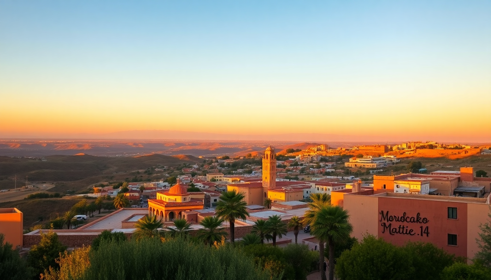

Best Time to Visit Morocco: Month-by-Month Guide

I’ve been to Morocco three times now—once in a scorching July, once in a chilly January, and once in the sweet spot of April. Each trip felt like a completely different country. The heat in Marrakech can crush you, but the empty medina in Fes during winter is pure magic. Here’s what I learned about timing it right, month by month.
When is the best overall time to visit Morocco?
For most travelers, April to May and September to October are the sweet spots. The weather is warm but not brutal, crowds are manageable, and prices sit in the middle ground between peak summer and winter lows.
I landed in Marrakech in mid-April last year, and the temperature hovered around 24°C (75°F). Perfect for walking through Jemaa el-Fnaa without sweating through your shirt. The Majorelle Garden was busy but not packed. In Fes, the Bou Inania Madrasa felt airy and cool, and I could actually breathe while climbing the Medersa Attarine rooftop.
- Best months for all-around comfort: April, May, September, October
- Best for budget travelers: January, February (except holidays), November
- Best for beach weather: June, July, August (coastal spots like Casablanca or Essaouira)
- Avoid if you hate crowds: March (spring break), August (European holidays), December (Christmas/New Year)
What is Morocco like in winter (December–February)?
Winter in Morocco is a mixed bag. The days are crisp and sunny, but nights drop fast—especially in the mountains or desert. I was in Fes in late January, and the medina was eerily quiet. Shopkeepers had time to chat, and I haggled for a leather pouf without the usual tourist markup.
Marrakech in winter is pleasant during the day (around 18°C / 64°F) but cold after sunset. I stayed at Riad Kniza near the Bahia Palace, and the heated floors were a lifesaver. Chefchaouen in January? Cold. The blue-washed alleys were nearly empty, which I loved, but bring a thick jacket. Casablanca gets windy and damp—skip the Hassan II Mosque on a rainy day.
- Pros: Low prices, fewer tourists, great for exploring medinas
- Cons: Cold nights, some riads lack central heating, mountain passes may close
- Packing tip: Layers, a warm coat, and thermal socks for Chefchaouen or the Atlas Mountains
How does spring (March–May) treat travelers?
Spring is when Morocco wakes up. By March, the almond trees bloom around Ourika Valley near Marrakech. I drove out there one morning, and the hills were patchy with pink and white. The weather is unpredictable though—I had a sunny 28°C day in Marrakech followed by a rainy 15°C day in Fes.
Easter week in March or April brings crowds and higher prices. Book Riad Fes or La Mamounia in Marrakech months ahead. April is the sweetest: the Jardin Secret in Marrakech is lush, and the Blue Gate in Fes is surrounded by blooming jasmine. Chefchaouen in May is perfect—warm enough for a rooftop mint tea at Café Clock, but not packed with Instagrammers.
- March: Unpredictable rain, almond blossoms, start of tourism season
- April: Ideal for Marrakech and Fes, green landscapes, moderate heat
- May: Best for Chefchaouen and mountain hikes, warm but not hot
Should you visit Morocco in summer (June–August)?
Honestly? Only if you love heat or plan to stick to the coast. Marrakech in July hits 45°C (113°F). I made that mistake once—the Saadian Tombs were a sweatbox, and the Koutoubia Mosque courtyard felt like an oven. By noon, the medina empties out. Locals nap. You should too.
Fes is slightly cooler but still brutal. I found refuge at Palais Amani, which has a pool and shaded courtyard. Chefchaouen in summer is more bearable thanks to its elevation—expect 30°C (86°F) during the day. Casablanca is the best bet for summer, with ocean breezes keeping temps around 26°C (79°F). The Corniche beachfront is lively, and Rick’s Café (yes, the one from the movie) is a good evening escape.
- Marrakech and Fes: Avoid unless you’re a heat lover—plan activities for early morning or evening
- Chefchaouen: Manageable, but book a riad with a terrace for evening cool-down
- Casablanca: Best coastal option, but expect humidity
- Ramadan note: If summer overlaps with Ramadan (dates shift yearly), many restaurants close during the day; plan accordingly
What about autumn (September–November)?
Autumn is my second-favorite season. September still feels like summer in Marrakech—I was there in early September and the Djemaa el-Fna food stalls were packed at 10 PM. The heat lingers, but it’s dry, not oppressive. By October, the city cools to the mid-20s, perfect for a hot air balloon ride over the Agafay Desert.
Fes in October is stunning—the leather tanneries at Chouara smell less pungent in cooler air. I visited Chefchaouen in late October, and the light hit the blue walls just right for photos without the midday glare. Casablanca in November gets gray and windy—I’d skip it unless you’re catching a flight.
- September: Still hot, good for coastal trips, less crowded than August
- October: Peak perfect weather for Marrakech and Fes, start of olive harvest season
- November: Cooler, fewer tourists, great for medina wandering—but pack a rain jacket
- Festival alert: The Fes Festival of World Sacred Music sometimes falls in September; check dates
FAQ
Is Morocco safe to visit during Ramadan? Yes, but expect adjusted hours. Many restaurants and cafes close during daylight, but tourist hotels and riads still serve meals. I was in Marrakech during Ramadan once, and the city felt calm during the day but exploded with energy after sunset—the iftar meals at Café Arabe were a highlight. Just avoid eating or drinking in public during fasting hours out of respect.
When is the cheapest time to fly to Morocco? Late January and early February, excluding school holidays. I booked a round-trip from New York to Casablanca for $420 in late January. November is also cheap, but flights around Thanksgiving and Christmas spike. Use fare alerts for Marrakech Menara Airport (RAK) or Casablanca Mohammed V (CMN).
What month has the least tourists in Morocco? January, February, and November are the quietest. I walked through the Fes el-Bali medina in February and barely saw another foreigner. The trade-off is cooler weather and some riads closing for renovations. Chefchaouen in November is ghost-town quiet—great for photos, but some shops may be shuttered.
Conclusion
- April–May and September–October are your best bets for balanced weather and crowds.
- Winter (Jan–Feb) offers low prices and empty medinas, but pack warm layers.
- Summer (Jul–Aug) is only tolerable on the coast—skip Marrakech and Fes.
- Chefchaouen shines in May and October; Casablanca is a summer-only play.
- Book Ramadan travel only if you’re prepared for altered schedules and nighttime energy.